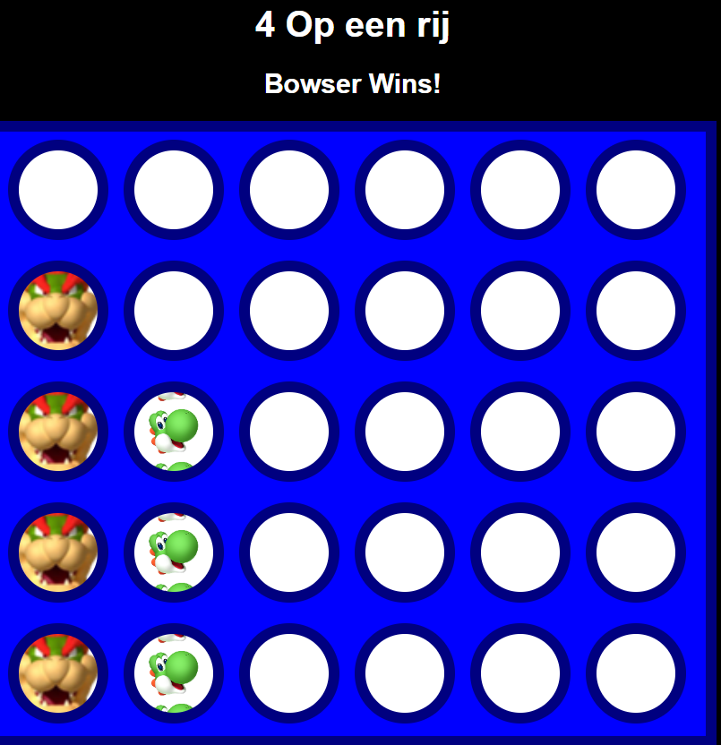

We gaan een mini game bouwen namelijk 4 op een rij
Hiermee kan je naar de spel gaan Connect 4 Game
Daarvoor hebben we drie codetalen nodig
We hebben een code-editor nodig, namelijk Visual Studio Code.
Tijd om te coderen, zodat we meer te zien krijgen dan een witte webpagina!
<DOCTYPE html>
<html lang="en">
<head>
<meta charset="UTF-8">
<meta name="viewport" content="width=device-width, initial-scale=1.0">
<title> 4 Op Een Rij</title>
<link rel="stylesheet" href="connect4.css">
</head>
<body>
<h1> 4 Op een rij </h1>
<h2 id="winner"></h2>
<div id="board"></div>
<script src="connect4.js"></script>
</body>
</html>
Dit is een basis-structuur waarin we verder werken.
:root {
--spacing-hw: 4.375rem;
--background-color-board: hsl(240, 100%, 50%);
--background-color-border: hsl(240, 100%, 25%);
--border-width: .625rem;
}
body {
font-family: 'Arial', sans-serif;
text-align: center;
background-color: black;
background-size: 100% ;
}
h1, h2 {
color: white;
}
#board {
height: 540px;
width: 630px;
background-color: var(--background-color-board);
border: var(--border-width) solid var(--background-color-border);
margin: 0 auto;
display: flex;
flex-wrap: wrap;
}
.tile {
height: var(--spacing-hw);
width: var(--spacing-hw);
background-color: hsl(0, 0%, 100%);
border-radius: 50%;
margin: 7px;
border: var(--border-width) solid var(--background-color-border);
}
.mario {
background-image: url("img/Mario.png");
background-size: 5rem;
background-position: 50%;
}
.peach {
background-image: url("img/Peach.png");
background-size: 5rem;
background-position: 50%;
}
.sonic {
background-image: url("img/sonic.png");
background-size: 5rem;
background-position: 50%;
}
.luigi {
background-image: url("img/luigi.png");
background-size: 5rem;
background-position: 50%;
}
.bowser {
background-image: url("img/bowser.png");
background-size: 5rem;
background-position: 50%;
}
.yoshi {
background-image: url("img/yoshi.png");
background-size: 5rem;
background-position: 50%;
}
Dit bevat alvast een aantal basisstijlen die we later zullen nodig hebben voor de look & feel van onze app.
const allPlayers = ["Mario", "Peach", "Luigi", "Yoshi", "Sonic", "Bowser"];
let playersPerRound = 2;
let gameOver = false;
let board;
const rows = 5;
const columns = 6;
let currColumns = Array(columns).fill(rows - 1);
let currPlayers = [];
let currentPlayerIndex = 0;
window.onload = function() {
setGame();
};
function setGame() {
board = Array(rows).fill(null).map(() => Array(columns).fill(' '));
for (let r = 0; r < rows; r++) {
for (let c = 0; c < columns; c++) {
let tile = document.createElement("div");
tile.id = r.toString() + "-" + c.toString();
tile.classList.add("tile");
tile.addEventListener("click", setPiece);
document.getElementById("board").append(tile);
}
}
currPlayers = getRandomPlayers(playersPerRound);
}
function setPiece() {
if (gameOver) return;
let coords = this.id.split("-");
let r = parseInt(coords[0]);
let c = parseInt(coords[1]);
if (currColumns[c] < 0) return;
r = currColumns[c]--;
board[r][c] = currPlayers[currentPlayerIndex];
let tileId = r.toString() + "-" + c.toString();
let tile = document.getElementById(tileId);
if (!tile) {
console.error("Tile element not found!");
return;
}
tile.classList.add(currPlayers[currentPlayerIndex].toLowerCase());
if (checkForWin(r, c)) setWinner(r, c);
else togglePlayer();
}
function togglePlayer() {
currentPlayerIndex = (currentPlayerIndex + 1) % playersPerRound;
}
function checkForWin(r, c) {
const directions = [[1, 0], [0, 1], [1, 1], [-1, 1]];
for (let [dx, dy] of directions) {
let count = 1;
let row = r + dx;
let col = c + dy;
while (row >= 0 && row < rows && col >= 0 && col < columns && board[row][col] === currPlayers[currentPlayerIndex]) {
count++;
row += dx;
col += dy;
}
row = r - dx;
col = c - dy;
while (row >= 0 && row < rows && col >= 0 && col < columns && board[row][col] === currPlayers[currentPlayerIndex]) {
count++;
row -= dx;
col -= dy;
}
if (count >= 4) return true;
}
return false;
}
function setWinner(r, c) {
let winner = document.getElementById("winner");
winner.innerText = `${currPlayers[currentPlayerIndex]} Wins!`;
gameOver = true;
}
function getRandomPlayers(count) {
let shuffledPlayers = allPlayers.sort(() => Math.random() - 0.5);
return shuffledPlayers.slice(0, count);
}